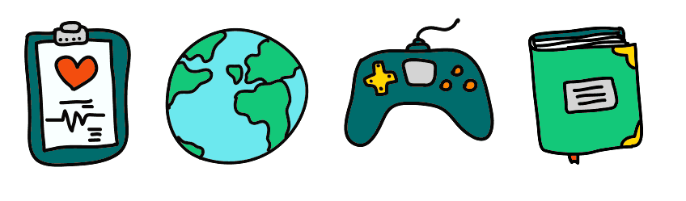

Тег Area определяет активные области изображения, которые являются ссылками. Рисунок с привязанными к нему активными областями называется картой-изображением. Такая карта по внешнему виду ничем не отличается от обычного изображения, но при этом оно может быть разбито на невидимые зоны разной формы, где каждая из областей служит ссылкой. Этот тег всегда располагается в контейнере map, который связывает координаты областей с изображением.
Атрибутами тега "area" мы указываем как координаты области (атрибут coords), так и тип необходимой нам фигуры (атрибут shape):
Выбери иконку:
